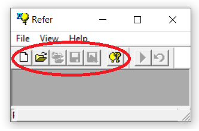
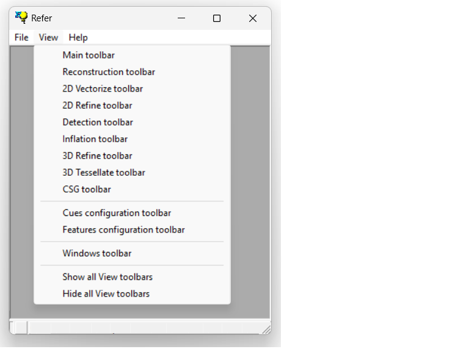

1.5.2.3 Toolbars
Most of the commands included in the menu bar are also accessible via icons, which are organized into the various toolbars.
By default(1), toolbars are located either at the top or on the left side of the corresponding parent/child window.

Toolbars can be toggled on or off(2) by clicking the View option in the menu bar:

NOTES:
(1) Toolbars in REFER are dockable: simply click and drag the toolbar frame to move the toolbar.
(2) Toolbars linked to child windows are only enabled when their corresponding windows are open.